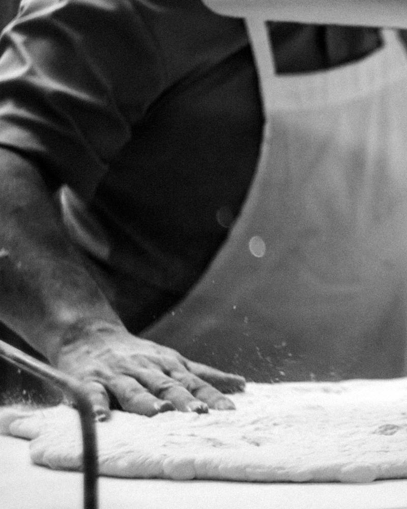

A test page for the cursor-painted reveal card. Without the drawing the photograph stands alone, and nothing is lost but the play.

The picture is printed as an engraving. Where the pointer passes, the photograph shows through for a moment and closes again.
A test page for the cursor-painted reveal card. Without the drawing the photograph stands alone, and nothing is lost but the play.